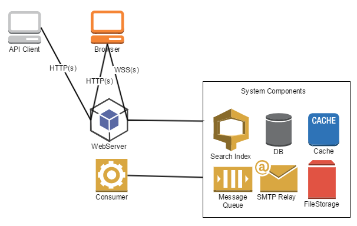

Oro applications are implemented in PHP and require additional system components to be installed and configured in the environment.
Oro applications are web applications where most of the user interactions are done via web browser interface. HTTP(s) protocol is used as the foundation for data communication and the WebSocket protocol is used for real-time user notifications and updates.
See the list of supported browsers in the system requirements.
Application Programming Interface exposed over the web is a required part of business application and allows to integrate it into the enterprise infrastructure. Oro REST API allows any 3rd party API Client to consume application data and implement complex business scenarios related over HTTP(s) protocol.
See more information about the API.
Web server is the main application entry point and is a required system component to run Oro applications. Web server configuration can be different based on the expected application load, and can start with the single instance in the same environment where all other system components are installed. But it also can be much more complex and include multiple instances behind the load balancer. Web server should be available to the end user browser.
Consumer is an application command that is running as a daemon and handles all the messages registered within a Message Queue. Consumer is scalable and can run on multiple servers if the application has a lot of asynchronous processes to be handled.
System components are 3rd party software required by the Oro application, and they should be accessible by the application Web Server and the application Consumer. System components can be installed on the same server or on the separate servers that are accessible by the Oro application.
Application data is indexed based on the application configuration and is stored in the search index. Community Edition supports only DB fulltext search index. The Enterprise Edition supports the highly scalable Elastic Search.
See more information about the DB fulltext search. See also Dealing with the Search Index.
See more information about the Elastic Search.
All application data is stored in the relational database. PostgreSQL is supported by the Enterprise Edition only. MySQL can be used with both Community Edition and Enterprise Edition.
Application functions use cache in order to optimize complex operations processing. By default, in a single server setup, file system is used asa cache storage. In the distributed environment, Redis is recommended as a cache storage.
See more information about the cache configuration.
In order to provide proper user experience and scale heavy backend operations, application integrated with message queue where all asynchronous jobs are registered and handled with consumer process. The Community Edition of the message queue component is implemented based on the database and Enterprise Edition requires RabbitMQ for better scale.
See more information about using the Message Queue.
In order to send emails, Oro application needs SMTP Relay service to be configured.
Application files related to the user data (attachments, images, documents) are stored in the file storage. In case of a single server setup, the server file system is used as the default file storage. In the distributed setup, Oro application supports any file storage supported by KnpGaufretteBundle.